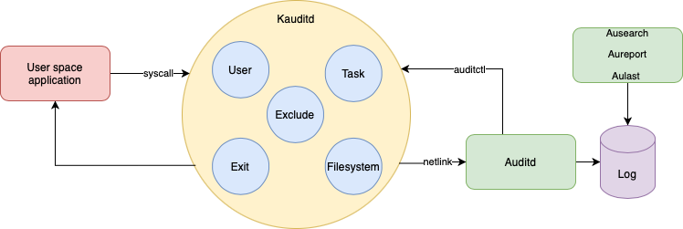
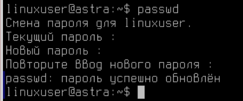
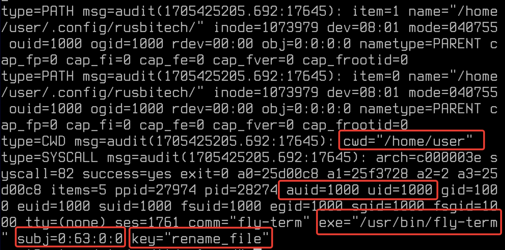

Лабораторная работа №11. Тема: "Настройка подсистемы аудита в Astra Linux Special Edition"
<---- Обратите внимание на консольный сервер в левой части экрана, вам следует использовать этот сервер для выполнения лабораторной работы
Цель работы
Цель работы
Цель работы
- Архитектура аудита;
- Правила протоколирования событий на Astra Linux;
- Утилиты управления аудитом;
- Журналирование.
Оборудование, ПО:
Виртуальная машина или компьютер под управлением ОС AstraLinux 1.7 в режиме защищенности "Воронеж" или выше.
Чем займемся?
Audit - это инструмент, который работает в любом Linux дистрибутиве. Его задача - отслеживать, что происходит в системе для мониторинга и контроля.
Audit умеет следить за:
- Доступ к файлам;
- Изменение прав на файлы;
- Просмотр пользователей, изменивших конкретный файл;
- Обнаружение несанкционированных изменений;
- Мониторинг системных вызовов и функций;
- Обнаружение сбоев;
- Выполненные команды.
Схема работы подсистемы auditd можно визуализировать так:
Установка и настройка
Пакет audit входит в стандартную сборку Astra Linux и не требует дополнительных установок.
Конфигурация выполняется с помощью двух файлов:
- auditd.conf - настройка самого демона;
- audit.rules - настройка правил, используемых средством auditctl.
Чтобы настроить, какие именно события подвергать проверке, в структуре аудита используется файл правил с именем audit.rules.
Активные правила можно просмотреть с помощью опции -l:
auditctl -lИ, кстати, в Linux дистрибутивах по-умолчанию эти правила пустые, но не в Astra Linux!
В Astra, уже выполнено несколько настроек, мы разберемся с тем что это за настройки, когда попробуем сами создать свои - будет намного легче.
Итак, чтобы выполнить, например, мониторинг файла конструкция будет такая:
auditctl -a exit,always -F path=<имя_файла> -F perm=<разрешения>И вот реальный пример:
auditctl -a exit,always -F path=/etc/passwd -F perm=waВ этом случае, ключ -F установит фильтры на файл указанный в path. Переменная path определяет, что создаст событие в системе (то есть, в этом случае кто файл изменит) Есть 4 типа доступа, похожие на разрешения файлов, но важно отметить, что между ними есть существенное различие:
- r=читать;
- w=писать;
- x=выполнить;
- a=изменить атрибут.
Ключ -a указывает список и действие. Допустимые списки: task, exit, user, exclude. Допустимые действия: never, always.
Основные варианты списков:
- exit - Добавить правило к списку, отвечающему за точки выхода из системных вызовов. Этот список применяется, когда необходимо создать событие для аудита, привязанное к точкам выхода из системных вызовов.
- exclude - Добавить правило к списку, отвечающего за фильтрацию событий определенного типа. Этот список используется, чтобы отфильтровывать ненужные события. Например, если вы не хотите видеть avc сообщения, вы должны использовать этот список. Тип сообщения задается в поле msgtype.
Варианты действий:
- always - установить контекст аудита. Всегда заполнять его во время входа в системный вызов и всегда генерировать запись во время выхода из системного вызова;
- never - аудит не будет генерировать никаких записей. Это может быть использовано для подавления генерации событий. Обычно необходимо подавлять генерацию вверху списка, а не внизу, т.к. событие инициируется на первом совпавшем правиле.
Рассмотрим на практике
Попробуем добавить собственное постоянное правило в наш auditd.
Откроем конфигурационный файл Auditd:
vim /etc/audit/rules.d/audit.rulesДобавим последнюю строку в данный файл:
-w /etc/passwd -p wa -k passwd_file_changedПосле внесения настроек в конфигурационный файл необходимо перезагрузить auditd:
systemctl restart auditdПроверить, что правила применились можно командой:
auditctl -lА что мы сейчас сделали?
Теперь, мы дополнительно контроллируем файл /etc/passwd. Применяемые в этой команде ключи:
- -w (where), указываем путь до контролируемого файла;
- -p (permissions), в этом случае указываем контролируемые параметры, в нашем случае это запись, а также попытки изменить атрибуты доступа;
- -k (key), в этом случае указывем ключ, по которому в событиях auditd будем производить поиск.
А как проверить?
Попробуем сменить пользователю linuxuser пароль:
А затем найдем события по ключу:
ausearch -k passwd_file_changedУра! Теперь мы контролируем данный файл, и в случае попытки записи в этот файл - незамедлительно получим отчет об этом.
Попробуем настроить мониторинг еще чего-нибудь?
-w /etc/sysctl.conf -p rwa -k configaccessВ этом случае мы проверяем, как часто файл читают, попытки редактирования и смены атрибутов.
В целом, файл /etc/sysctl.conf отвечает за настройку некоторых параметров ядра Linux. Он периодически прочитывается операционной системой, поэтому при настроенных параметрах сверху в логах вы сразу найдете события об этом файле.
Обязательно попробуйте настроить и поискать события!
Аудит системных вызовов позволяет отслеживать действия на сервере далеко за пределами уровня приложений. Вы можете отслеживать какие файлы были изменены и какой пользователь попытался это сделать.
Синтаксис правил системных вызовов:
auditctl -a action,filter -S system_call -F field=value -k key_nameА теперь рассмотрим реальный пример:
sudo auditctl -a always,exit -F arch=b64 -F "auid>=1000" -S rename -S renameat -k renameВ этом примере мы настроили мониторинг событий, связанных с переименованием файлов. Система будет логировать, через какую систему файл был переименован и каким пользователем.
Проверка настройки
Проверим, например, под пользователем user создайте в домашней папке файл, а затем переименуйте его, а затем введите команду:
ausearch -k renameВывод, конечно, пугающий! Но при вчитывании в строчки можно заметить, с каким уровнем целостности, какой пользователь и через какой инструмент вносит правки в файлы.
Дополнительные примеры настроек для auditd
Контроль за выполнением команды insmod
Данная команда выполняет установку модулей в ядро Linux:
auditctl -w /sbin/insmod -p x -k module_insertКонтроль за попыткой записать или изменить атрибуты файла /etc/selinux
auditctl -w /etc/selinux/ -p wa -k selinux_changesПравило, регистрирующее все выполнение программы /bin/id
auditctl -a always,exit -F exe=/bin/id -F arch=b64 -S execve -k execution_bin_idАудит журнальных файлов
Аудит журнальных файлов выполняется с помощью утилиты aureport, которая позволяет создавать сводные отчеты о событиях, записанных в файлах журнала Audit. По умолчанию все файлы audit.log находятся в каталоге /var/log/audit/ и запрашиваются для создания отчета.
Чтобы создать отчет для зарегистрированных событий за определенный промежуток времени, используйте следующую команду:
aureport --start <месяц>/<день>/<год> <часы>:<минуты>:<секунды> --end <месяц>/<день>/<год> <часы>:<минуты>:<секунды>Например:
aureport --start 07/15/2023 00:00:00 --end 09/12/2023 00:00:00Практическая работа
- Добавьте правила в
/etc/audit/rules.d/audit.rulesили убедитесь, что ваше правило доступно к просмотру в выводе командыauditctl -l:- Отслеживание запуска определенного
/usr/bin/vim/. Имя процесса отслеживания следует настроить -vim_execution. - Отслеживание обращения записи и чтения файла
/etc/hosts. Имя процесса отслеживания следует настроить -access_hosts.
- Отслеживание запуска определенного
- Убедитесь, что при вводе команды
auditctl -l, в списке правил встречаются сделанные вами настройки.
Заключение
В результате прохождения данного курса вы приобрели необходимые базовые навыки для эффективной работы с подсистемой Аудита в Astra Linux. Безусловно, данный инструмент имеет множество функций и особенностей, которые настраиваются индивидуально под конкретную задачу и инфраструктуру.
Конечно, читать логи так - довольно неудобно, поэтому чаще всего данные события собирают на сервер для дальнейшей визуализации - это, например, MaxPatrol или Auditbeat.
Следующий материал
В следующем материале вы познакомитесь с темой - Red Book: настройка безопасной конфигурации для Astra Linux Special Edition 1.7.
Благодарю за чтение и успехов вам в обучении!
Дополнительная информация:
- Auditd - документация от RedHat
- Настройка auditd для обнаружения и расследования инцидентов
- Настройка и аудит системы Linux с помощью демона Auditd
- Аудит системных вызовов
После завершения работы, для проверки выполнения работ - выполните команду
checker_system10